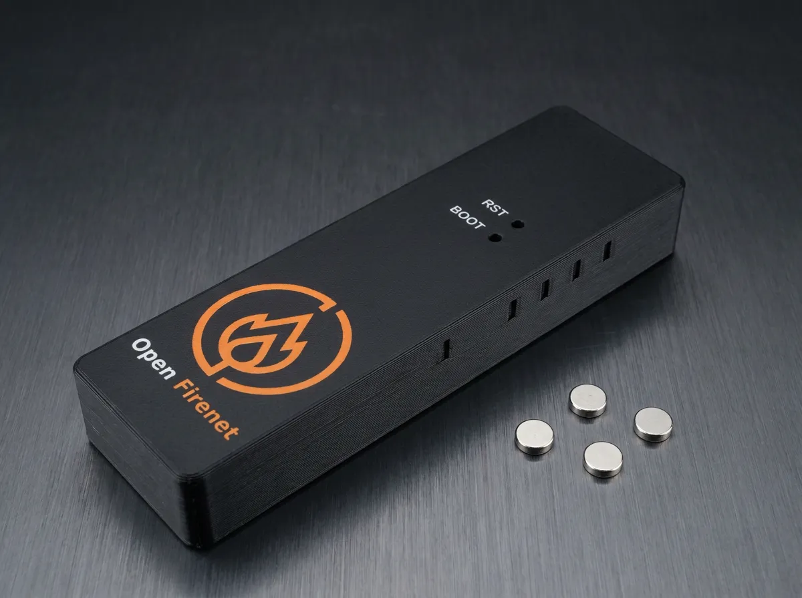

Hardware
The bridge is an ESP32-S3 board plugged into the stove's USB socket. Many boards fit; this page tells what to look for, and lists the ones that are known to work.
What the board must have
- An ESP32-S3 chip. Not an ESP32, an ESP32-C3 or an ESP32-S2: the firmware is built for the S3 only.
- The chip's native USB on a connector. The stove talks to the bridge over USB, so the board's USB port must be wired to the ESP32-S3 itself, not to a serial adapter chip (CH340, CP2102...).
- At least 4 MB of flash memory. Nearly every ESP32-S3 board has that or more.
A screen or a battery is not needed. Extra memory (PSRAM) is not mandatory, but 8 or 16 MB octal PSRAM is used by the PSRAM firmware variant and leaves more free memory; quad PSRAM (2 MB) is not used. An external antenna helps when the stove is far from your Wi-Fi access point.
Boards with two USB ports: the stove must be plugged into the port labelled "USB" or "USB OTG" (the chip's native USB). The port labelled "UART" or "COM" is only for flashing and logs. This is the most common mistake; the bridge's page tells you when it happens.
The cable
The stove has a USB-A socket, the one the RIKA Firenet or ANIMO Wi-Fire stick plugs into. Use a cable or an adapter from your board's connector to USB-A male, and make sure it carries data: many short cables only carry power.
Boards
| Board | Format | Status | Connector | Notes |
|---|---|---|---|---|
| ESP32-S3 Pocket Dongle (16 MB flash, 8 MB octal PSRAM, 0.96" screen) | USB dongle | Tested | USB-A plug | A stick with its own USB-A plug, 16 MB flash, 8 MB octal PSRAM and a 0.96" ST7735 colour screen. Tested by the project. Uses the PSRAM firmware variant. Its screen shows the same screens as the LilyGO T-Dongle-S3: see the stick's screen. |
| LilyGO T-Dongle-S3 (with screen) | USB dongle | Tested | USB-A plug | A stick with its own USB-A plug. It may need a USB extension cable between the stove and the stick, see below. Its screen shows the stove state and temperatures since Open Firenet 4.5: see the stick's screen. To flash it, plug it into your computer. |
| LilyGO T-Dongle-S3 (without screen) | USB dongle | Expected | USB-A plug | Same board as the version with a screen; not tested. |
| ESP32-S3-DevKitC-1, N16R8 module | Dev board | Tested | 2 × USB-C | The common development board with two USB-C ports and 44 pins, sold under many brands. It is the board Open Firenet is developed on. Plug the stove into the "USB" port, not "UART" / "COM". |
| ESP32-S3-DevKitC-1 N16R8 kit with case and external antenna connector | Dev board | Reported | 2 × USB-C | The same board sold as a kit with a grey screwed case, with a connector for an external antenna (for example by Heemol). No soldering, and the antenna helps when the stove is far from the Wi-Fi access point. A user runs this kind of kit on his stove. Same rule: the stove goes on the "USB" port. |
| Freenove ESP32-S3 (model FNK0099, 16 MB flash, 8 MB PSRAM) | Dev board | Reported | 2 USB ports | Development board sold in packs of two. Reported working by a user. It has two USB ports: the stove goes on the native one ("USB" or "USB-OTG"), not on the "UART" one. |
| AYWHP ESP32-S3 DevC-1 (N16R8, 16 MB flash, 8 MB PSRAM) | Dev board | Expected | 2 × USB-C | Development board sold in packs of two. A user installed Open Firenet on it with the installer and reaches its page. Not confirmed on a stove yet. Same rule as the other boards with two ports: the stove goes on the "USB" port, not "UART" / "COM". |
| YD-ESP32-S3 (N16R8, 16 MB flash, 8 MB PSRAM) | Dev board | Reported | 2 × USB-C | Popular DevKitC-1 clone with two USB-C ports and an RGB LED. The stove goes on the "USB" port. Compatible with the 3D-printed magnetic case below. |
| diymore ESP32-S3 Mini (4 MB flash, 2 MB quad PSRAM) | Dev board | Reported | USB-C | Compact development board (ESP32-S3-Zero form factor) sold in packs of two, with native USB only. Its 2 MB PSRAM is quad, so it uses the standard firmware variant. Reported working by a user. |
| M5Stamp S3 | Dev board | Expected | USB-C | Native USB only. No report from a stove yet. |
| Seeed Studio XIAO ESP32-S3 | Dev board | Expected | USB-C | Native USB only. No report from a stove yet. |
Tested by the project on a stove. Reported working by a user. Expected to work from its specifications, without a confirmed report.
USB dongle: plugs straight into the stove's USB-A socket, no cable needed. Dev board: connects to the stove with a USB data cable.
LilyGO T-Dongle-S3 with screen: keep a USB extension cable at hand. In our test, plugged straight into the stove, the stick drew too much current when it started, because of its screen, and the stove restarted. With a USB extension cable between the stove and the stick it worked: the cable limits that inrush of current. It may not happen with every stick or every stove.
If the stove restarts when you plug the bridge in
The stove's USB socket only delivers a limited current. A board that draws a lot at start-up (a screen, LEDs, extra modules) can make the stove restart. Most boards do not cause it. If it happens with yours, put a USB extension cable between the stove and the board.
Boards with native USB only
Sticks and small boards such as the T-Dongle-S3, the M5Stamp S3 or the XIAO have a single USB port, the native one. It is used both to flash the board from your computer and to talk to the stove. If the installer does not find the board, hold its BOOT button while plugging it in.
Cases and 3D prints
You can leave the board bare, but a case protects it from dust and keeps the installation clean behind the stove.

The magnetic case below. Photo: tatutsa888.
- Magnetic case by tatutsa888 (Printables, free 3D model): designed specifically for Open Firenet on a YD-ESP32-S3 or DevKitC-1 board. It snaps closed without screws, holds to the stove's steel panel with neodymium magnets, and conceals the USB port and cable. Print in PETG or ABS to withstand heat near the stove.
- Heemol kit with enclosure: if you do not have a 3D printer, some ESP32-S3 DevKitC-1 boards are sold as kits with a screwed enclosure and an external Wi-Fi antenna (see the boards table above).
Your board works? Tell us
This list grows with your reports. If your board works, or does not, open a "It works on my stove" report with the board's exact name and your stove model: it helps the next person choose.